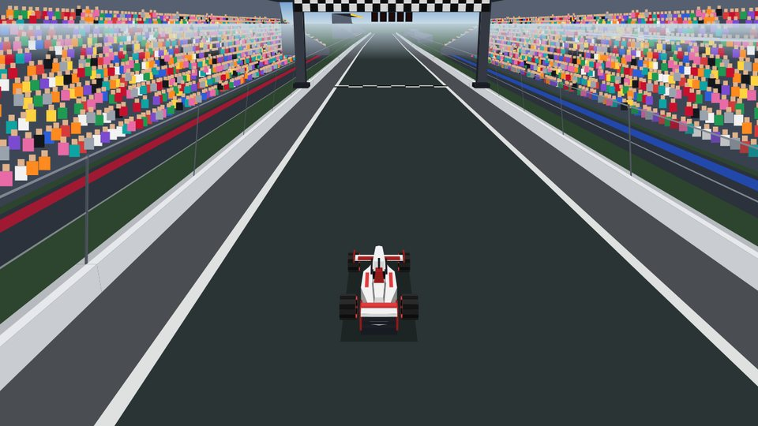
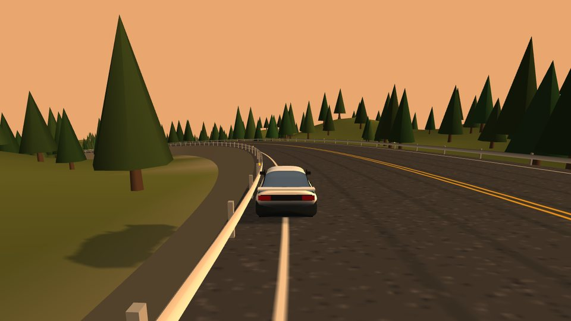
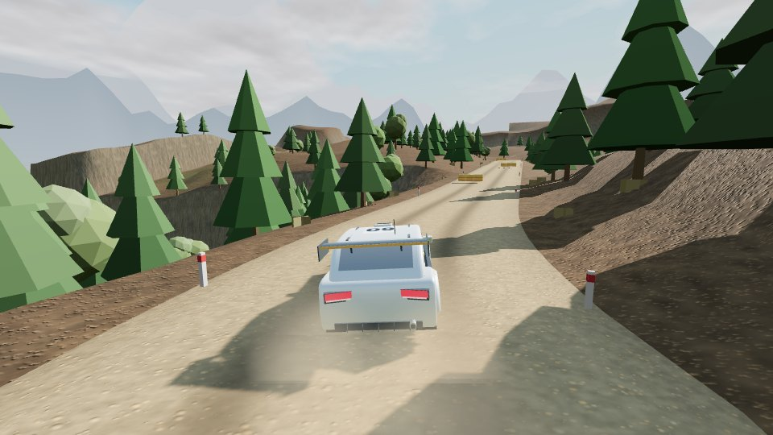

01 · Mode
Circuit Race
실제 F1 서킷 6곳. F4에서 F1까지 차를 업그레이드하고 튜닝하며, AI 5대와 시즌 챔피언십을 치릅니다. 1인칭 콕핏 시점도 지원해요.

Featured project
서킷·드리프트·랠리, 세 가지 방식으로 달리는 레이싱 게임. 모드별 개인 기록과 온라인 랭킹까지 담았어요.
01 · Mode
실제 F1 서킷 6곳. F4에서 F1까지 차를 업그레이드하고 튜닝하며, AI 5대와 시즌 챔피언십을 치릅니다. 1인칭 콕핏 시점도 지원해요.

02 · Mode
일본 산길 다운힐 4코스에서 AE86, RX-7, 미아타로 달립니다. 타임어택 점수에 도전하거나 AI와 1:1 배틀을 해보세요.

03 · Mode
시드로 매번 새로 만들어지는 자갈·진흙 산악 스테이지. AWD 랠리카와 코드라이버 페이스노트로 스페셜 스테이지나 자유 주행을 즐겨요.

04 · Records & accounts
모드마다 내 기록과 온라인 랭킹이 저장됩니다. 구글로 로그인하면 진행 상황이 계정에 저장돼요.
Works
About
09jun4는 AI와 함께하는 ‘바이브 코딩’으로 레이싱·서바이벌 게임부터 복셀 샌드박스까지 웹 게임과 프로그램을 만들고, 누구나 열 수 있는 웹페이지로 공개합니다.
만들면서 배운 내용은 게임 옆에 두는 작은 위키, Notes에 정리해요.
Skills & technologies